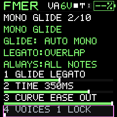

Sound design
Envelopes, LFOs and control scaling
Understand time-based sound changes and the difference between FM and VA envelopes.
An envelope changes a value in response to a note. VA uses attack, decay, sustain and release. FM uses four rates and four destination levels per operator, plus a global pitch envelope. The FM ENV shortcut affects carriers, while EDIT exposes each operator independently. Modulators with changing envelopes create evolving brightness even when output loudness stays steady.
An LFO is a repeating low-frequency modulation source. FM provides waveform, rate, pitch depth, amplitude depth, delay, sensitivity and sync controls. VA provides its implemented pitch modulation controls. The enable gate is shared with the FX toggle. Stored settings remain when modulation is off.
On the unit, the four parameter knobs cover their full usable range. Holding SEL gives a finer edit around the current value; frequency and time controls use appropriate nonlinear scaling. Always check the displayed canonical value. SELECT is the rotary selector; SEL is the separate button used for fine adjustment or page-specific confirmation.
Repeated ARP or LFO button presses can toggle their active state. Use SELECT for their pages instead of assuming every family button only advances a page. The panel map documents the exceptions.

